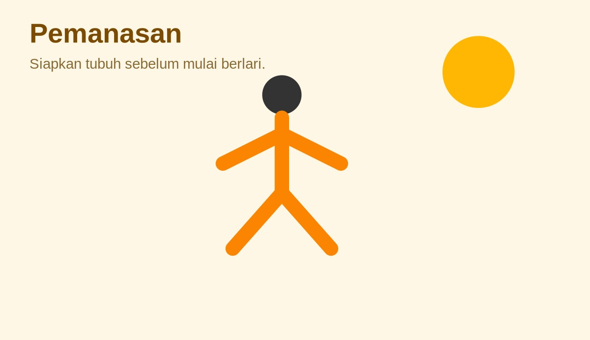
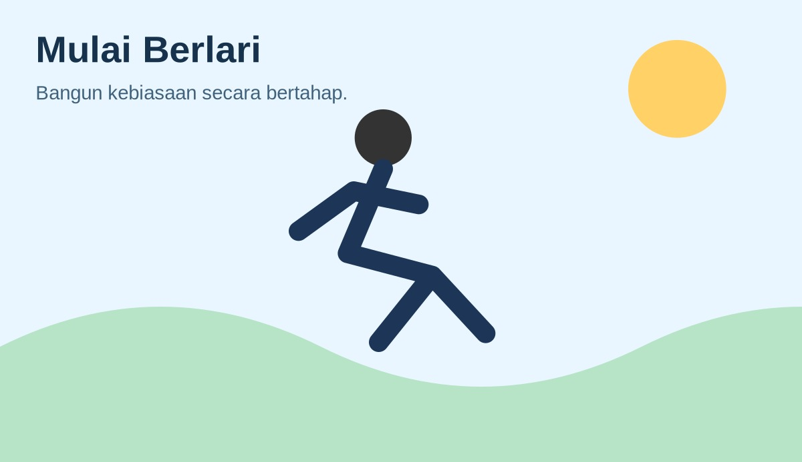
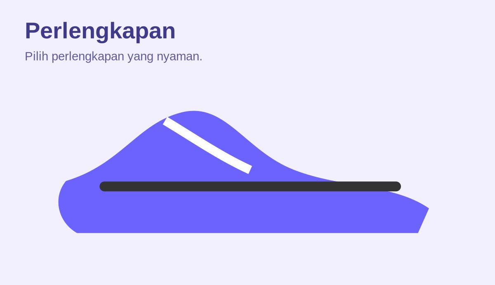

Pemanasan
Pemanasan membantu menyiapkan tubuh sebelum aktivitas.
- Jalan ringan
- Gerakan kaki dan tangan
- Naikkan intensitas bertahap
Pelajari dasar lari, pemanasan, teknik, perlengkapan, program latihan, video, audio, dan quiz interaktif.
Mulai Belajar Coba Quiz
Materi singkat untuk pemula.

Pemanasan membantu menyiapkan tubuh sebelum aktivitas.
Jaga tubuh tetap rileks, langkah nyaman, dan atur napas.

Gunakan perlengkapan yang nyaman.
Mulai dari intensitas ringan. Jangan memaksakan diri. Gunakan pace yang nyaman dan tingkatkan latihan secara bertahap.
| Minggu | Latihan | Durasi | Fokus |
|---|---|---|---|
| 1 | Jalan + lari ringan | 20 menit | Adaptasi |
| 2 | Jalan + jogging | 25 menit | Ritme |
| 3 | Jogging ringan | 30 menit | Konsistensi |
| 4 | Jogging + lari ringan | 30 menit | Ketahanan |
Contoh penerapan elemen audio HTML.
Jawaban diproses menggunakan JavaScript.
RunSmart adalah project website edukasi bertema lari untuk membantu pemula mengenal dasar olahraga lari secara sederhana.
Buka Panduan Lari Lengkap →